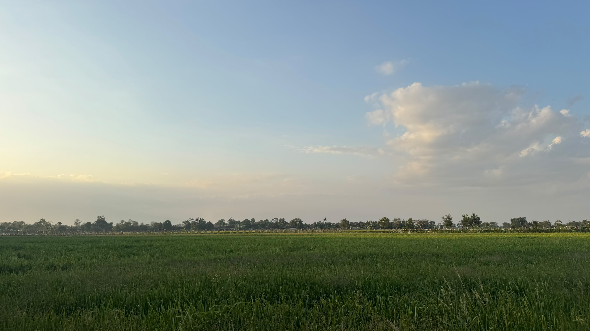
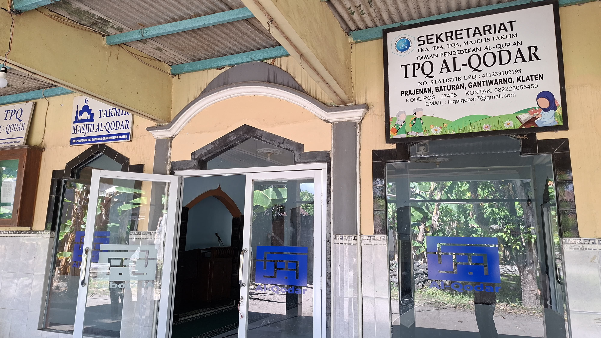
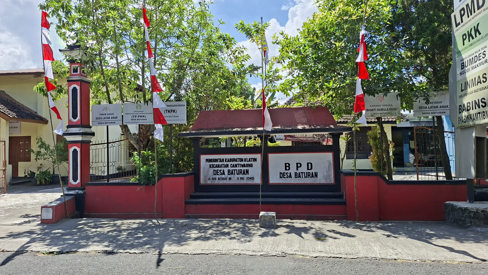
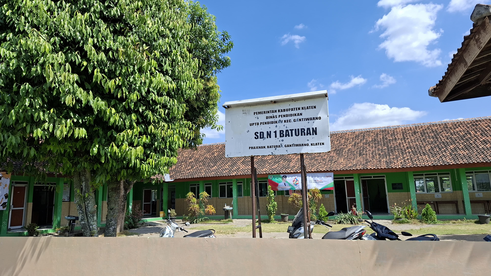
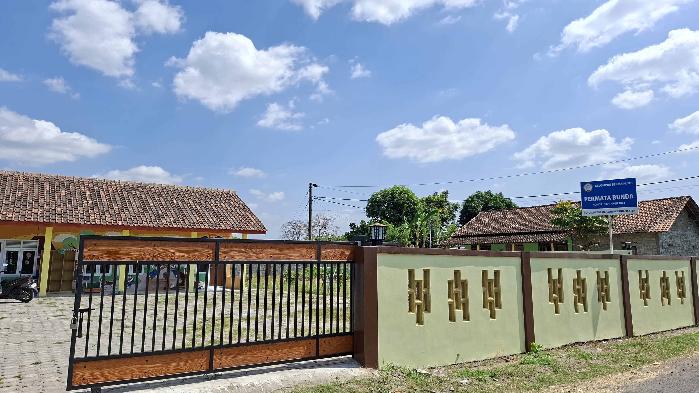
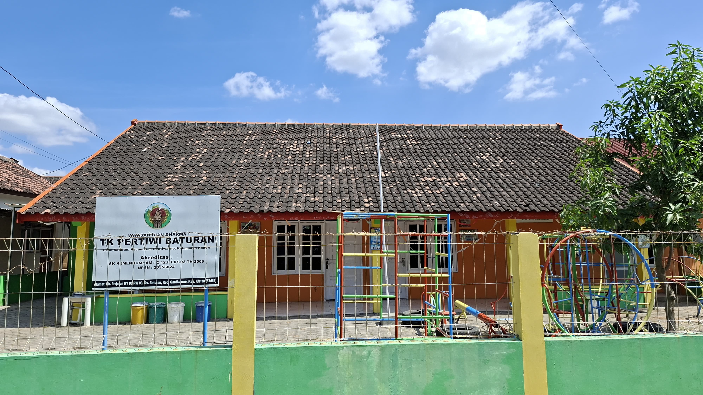
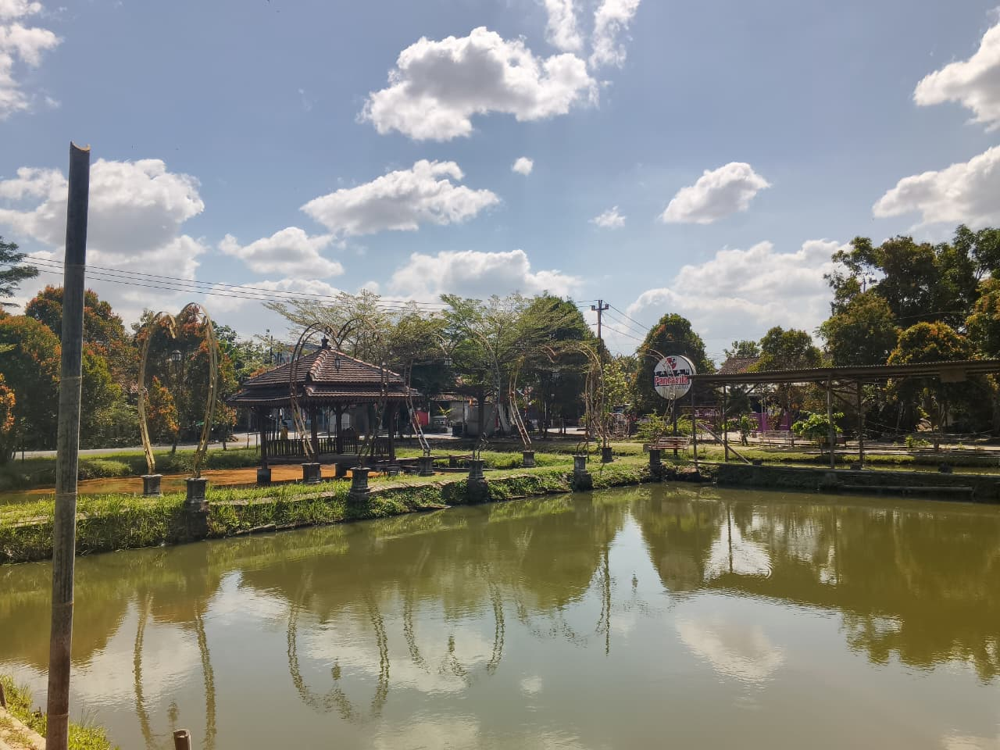
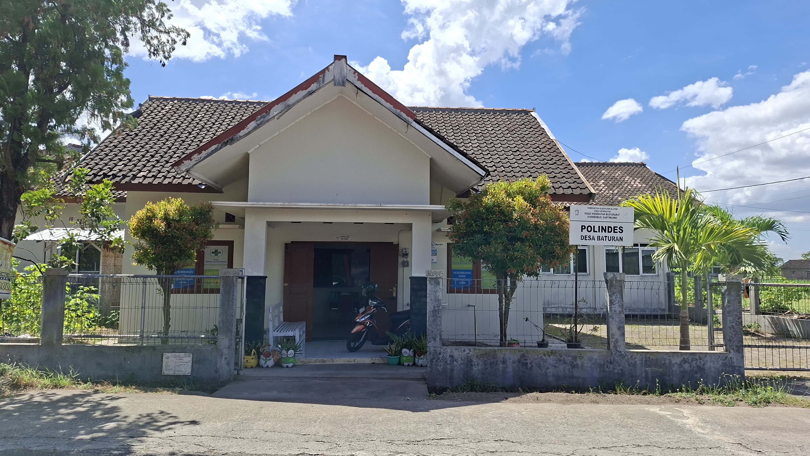

Salah satu dari tiga pedukuhan utama Desa Baturan. Dijaga oleh hamparan sawah, irigasi turun-temurun, dan semangat gotong royong.
Jelajahi DukuhPrajenan adalah satu dari tiga pedukuhan utama Desa Baturan, berdiri di atas nilai ketekunan yang diwariskan lintas generasi.
Berkumpulnya orang-orang kepercayaan pejabat Kasunanan Surakarta di wilayah ini menjadi titik tolak sejarah kawasan.
Para abdi kerajaan (batur) yang mengabdi dengan tekun hingga sukses, menjadi sumber nilai ketekunan yang diwariskan.
Legenda tentang sumber mata air jernih berbatu, diyakini sebagai berkah wali bagi wilayah Baturan dan sekitarnya.
Prajenan mulai didokumentasikan sebagai wilayah potensial untuk ekonomi kreatif dan rintisan UMKM lokal.
Prajenan bergerak selaras dengan arah pembangunan Desa Baturan sebagai satu kesatuan wilayah.
Meningkatkan ketaqwaan kepada Tuhan Yang Maha Esa
Meningkatkan kinerja dan pelayanan prima kepada masyarakat
Mengupayakan ruang informasi publik (internet dan perpustakaan)
Meningkatkan peran serta masyarakat melalui gotong royong dan kearifan lokal
Mewujudkan desa wisata bernuansa alam yang asri
Meningkatkan kesehatan lingkungan, hidup bersih dan sehat
Mendorong partisipasi masyarakat dalam keamanan dan ketertiban
Meningkatkan produksi pertanian
Meningkatkan respon/tanggap bencana
Menciptakan ekonomi kreatif
Dukuh Prajenan berada di Jalan Cetok, Desa Baturan, Kecamatan Gantiwarno, Kabupaten Klaten.

Masjid
Balai Desa
SD
KB
TK
Taman Pancasila
Posyandu* Klik gambar untuk melihat ukuran penuh
Padi masih jadi tulang punggung, dengan jagung dan sayuran sebagai selingan, serta rintisan inovasi pertanian modern.
Keterangan: Padi ditanam 2 kali setahun (Nov–Apr dan Okt–Jun), jagung 1 kali (Apr–Sep). Total panen = 3 kali (2 padi + 1 jagung). Sesuai hero "3× Panen/Tahun"
Prajenan mencatat 38 unit usaha mikro aktif dengan total omset lebih dari Rp429 juta per tahun.
Ritme kegiatan rutin yang menjaga kekompakan warga Prajenan, dari kerja bakti hingga kesenian karawitan.
Gambaran umum kependudukan Dukuh Prajenan dan data monografi Desa Baturan.